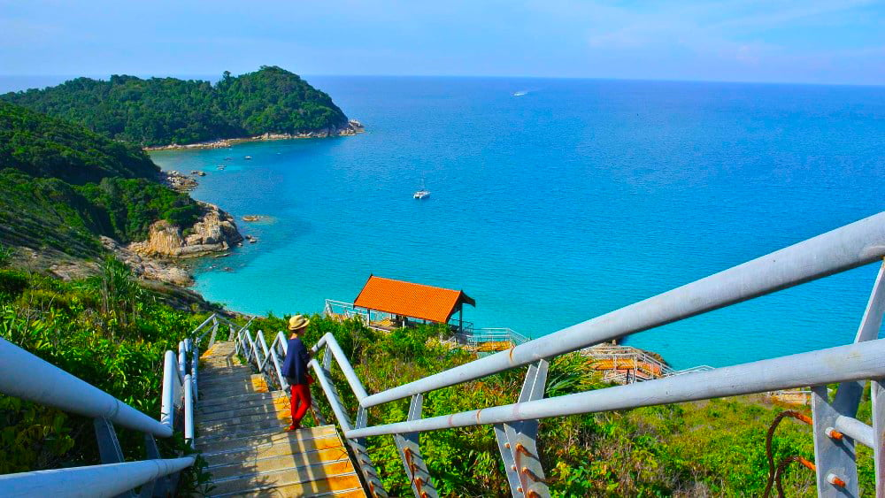

Terengganu Darul Iman
Drawbridge
Crystal Mosque
Chinatown

Nasi Dagang
Payang Market
Terengganu is one of Malaysia's most visited countries. First of all, it is worthy to remember that it has some of the most splendid and paradisiacal islands to visit. Terengganu, the capital of Kuala Terengganu, is perfect if you want to immerse yourself in the traditions and customs of this state. Terengganu provides many woods, jungles, mountains and waterfalls ready for adventure if you are into the countryside.
Kuala Terengganu
The city is situated at the estuary of Terengganu River, facing the South China Sea.
Famous place in Kuala Terengganu
| Drawbridge | Chinatown |
| Batu Burok Beach | Warisan Island |
| Payang Market | Nasi Dagang Atas Tol |
| Miami Beach | Crystal Mosque |
| Duyong Island | Keropok Lekor Losong |
Perhentian Island,Besut
The Perhentian Islands are in the district of Besut, Terengganu. Perhentian Besar and Perhentian Kecil are two major islands. Susu Dara, Serengeh and Rawa are tiny uninhabited islands in front of Perhentian Kecil.
Redang Island,Setiu
Redang Island is an island situated in Terengganu District of Kuala Nerus. It is one of the main islands off the eastern shore of Malaysia's peninsular. It is known for its calm waters and its white sandy beaches.
Kenyir Lake,Hulu Terengganu
In Hulu Terengganu, Tasik Kenyir or Kenyir Lake is an artificial lake, formed by the Kenyir Damming River in 1985. Sultan Mahmud's power station is supplied by the lake with electricity. It is a 260,000 hectare lake, the largest man-made lake on South-East Asia.
Rantau Abang,Dungun
Rantau Abang is a small village in Terengganu, known for its ocean turtle-nesting leatherbacks. This is situated 22 kilometers north of the Kuala Dungun and 80 kilometers south of Kuala Terengganu.